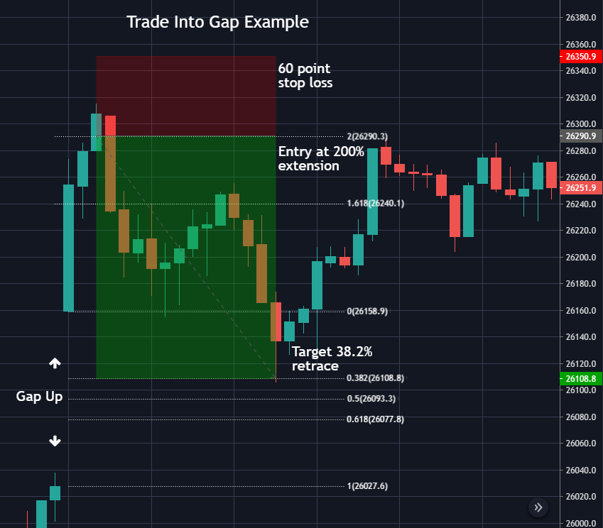
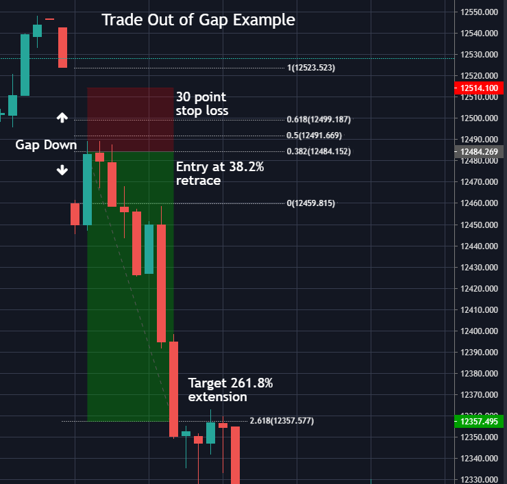
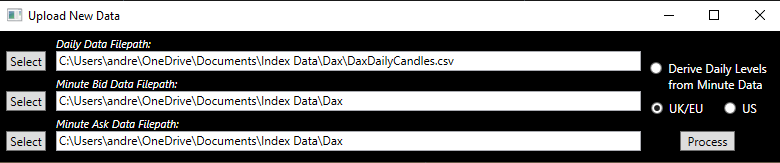

Gap Trader
Introduction
Gap Trader is a tool for finding and testing day-trading strategies on the financial markets. Since the strategies are based around the opening and closing cash price gaps it is best used with the major stock market indices such as the FTSE, Dax and Dow Jones. Furthermore, keeping costs low in the form of tight buy/sell spreads is essential when it comes to finding profitable short-term trading strategies.
The Gap Fill Strategy
The strategy uses Fibonacci levels derived from the daily open/close gap to generate entry and target levels. There are two variations of the strategy; one trades into the gap and the other trades out of it.
Trading into the gap involves aiming to enter the market at a selected Fibonacci extension level with a target at a selected Fibonacci retracement level, as illustrated above.

Trading out of the gap is the opposite. It aims to enter at a selected Fibonacci retracement level with a target at a selected Fibonacci extension level.
In both strategies a stop-loss of either a fixed points size or percentage of the gap size can be selected. Whether the stop-loss trails the market price and by how much can also be chosen.
Other important details to note are:
- Each strategy will only make a maximum of one trade per day
- If the entry level is not reached on any given day there is no trade
- Trades are not held from one day to the next, if the target or stop-loss is not hit they are closed at the closing price of the final minute candle of the day regardless of any profit or loss
Managing Data

Use the Data Management tab to upload and manage data-sets for use on the Gap Trader's Strategy Tester. Any unfilled gaps are found and statistics generated based on the Fibonacci retracement and extension levels. These can highlight important support and resistance levels and be useful making decisions in any trading strategy.
To upload a new data-set select the files with daily open, high, low, close (OHLC) candle data and one minute bid and ask OHLC data. Up to three years worth of one minute data can be downloaded for free from Dukascopy. For for best results download the daily data from Yahoo Finance to get the official open and close prices. Alternatively, select Derive Daily Levels from Minute Data to allow the application to calculate the daily open and close prices from the minute data using the mid-point of bid and ask candles data.
Note: It is important the correct timezone is selected so that cash price data can be identified and separated from futures.
New data can be added to existing data-sets in the same way. However, care should be taken to ensure the new data directly follows or overlaps the existing data to prevent potentially inaccurate gaps and levels being calculated.